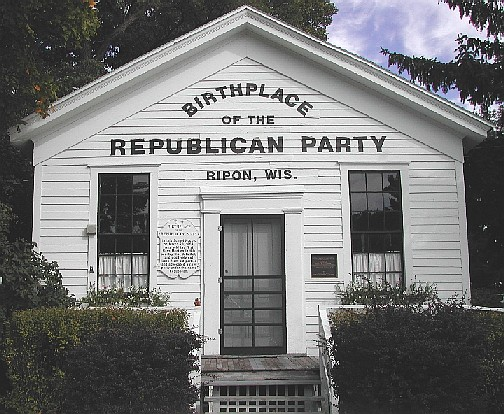
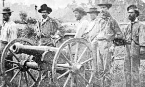
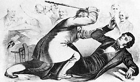
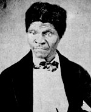

|
The Compromise of 1850, along with the wave of prosperity
that followed the Mexican war, led to a temporary sense of
unity that muted sectional hostilities. Middle class people
turned their focus to development, western speculation, and
railroad expansion. By this time, the Whigs were basically
dead. Their two great leaders, Webster and Clay, had reached
the end of their careers. Whig opposition to the Mexican war
and their insistence on admitting California as a free state
had caused them to be universally despised in the South.
The sense that the Whigs were elitist undermined their
support everywhere. Further, the Whigs were beset by
factionalism, as some supported the Compromise of 1850 and
some did not. In the election of 1852, the last in which
the Whigs fielded a candidate, Winfield Scott was soundly
beaten by Franklin Pierce.
Filibustering and the Ostend Manifesto
At this same time, several international
crises began to develop. Several Southerners undertook
filibustering expeditions, privately funded and led military
campaigns organized in the hope of conquering more territory
for slavery. In addition to the filibustering, delegates
representing the Pierce administration, including
Pennsylvanian James Buchanan met with Spain and demanded
that they sell Cuba to the U.S. or it would be seized by
force. Their statement, the Ostend manifesto, was seen as
the official policy of the Pierce administration until it
was disavowed several months later. Nonetheless, both of
these things gave even more credence to the rapidly growing
Northern belief that there was a Southern conspiracy to extend
slavery.
The Republican Party is Founded
In the fall of 1854, a Whig named Abraham Lincoln made a
series of speeches condemning Douglas and the
|

This home in Ripon, Wisconsin, hosted
the first meeting of what would become the Republican
Party.
|
Kansas-Nebraska Bill, as part of an aborted campaign for the
Senate seat from Illinois. The election showed that while
his principles were perhaps politically viable, the Whigs no
longer were. In the same year, a convention of influential Whigs and
Northern Democrats met to discuss a new party. The
leadership included Salmon P. Chase, William Seward, Charles
Francis Adams and Charles Sumner among others. The only
issue they united on was their opposition to the extension
of slavery into the territories. At the same time, the
nativists (or Know-Nothings) were attracting other former
Whigs who were opposed to immigration, especially of
Catholics. In early 1856, it was unclear which party would
achieve hegemony over the other.
Kansas Begins to Bleed
In 1854, while debate was raging over the Kansas-Nebraska
Act, abolitionist Eli Thayer founded the Massachusetts
Emigrant Aid Society, which was aimed at settling
free soilers in the territories. Through his efforts,
free-soil in Kansas became a major political issue, and a
popular cause in the North. It engendered similar feelings
in the south, and a similar organization dedicated to the
settling of pro-slavery partisans was founded in Missouri. Both of
these efforts were more important for the publicity they
created, rather than the small number of people they
actually settled.
In the same year, President Pierce selected men to govern
Kansas. For governor he chose Andrew Reeder, who, like the
rest of Pierce's appointees was a lifelong Democrat
dedicated to carrying out administration policy. Reeder
immediately decreed that the fate of slavery in Kansas would
be decided by popular sovereignty. At this time, former
Missourians (who favored slavery) were in the majority, and
they insisted on an immediate constitutional convention.
Reeder chose to hold off, instead only holding elections for
a delegate to Congress in 1854 and for a legislature in
early 1855. Both elections were carried overwhelmingly by
the pro-slave interests, thanks mostly to lots of
Missourians fraudulently crossing the border to vote.
In late summer of 1855, the illegally-elected pro-slavery
legislature met and passed several laws making Kansas a
slave state, over the objections of Reeder. In the middle of
this fight, Reeder got involved in a land speculation
scandal, and Pierce replaced him with Wilson Shannon. By
|

Free state supporters in "Bleeding Kansas"
|
this time, enough free soilers has come to Kansas to give
the state a large free soil majority. The free soilers held
their own convention and insisted on new elections and a
new constitutional convention. At the convention, the free
soilers approved a constitution that prohibited slavery,
nominated a slate of state officers and provided for the
election of a new legislature in January of 1856.
All of the political fighting in Kansas happened under the
auspices of the 34th Congress, the first Congress to include
Republican members. They were ready to battle against
popular sovereignty and to demand action in Kansas. The
first issue was the election of a new Speaker, which
required an absolute majority. The Republicans had the most
members, but not a majority, and so the elections were
stalled for months. Finally, enough Know Nothings voted
with the Republicans to get Know Nothing Nathaniel Banks
elected, thus foreshadowing the fusion of the Republicans
and Know-Nothings that would occur shortly thereafter.
Meanwhile, the Senate debated Kansas, and was unable to come
to an endorsement of either the pro-slave or the free-state
legislature.
While Congress was dueling, a proslavery mob attacked
Lawrence, the capital of the free soilers. The mob burned
the free soil governor's house, destroyed the town's only
paper, looted several private dwellings and killed one
person. The Northern Press made a big deal of this, writing
that Lawrence had been completely destroyed by the "border
ruffians". Whether true or not, the incident and the
coverage it received served to excite emotions and inflame
tensions.
One person who was particularly inflamed was a man named
John Brown. He had a belief that it was his personal
responsibility to resolve the situation. So, he led a small
band of men, including four of his sons, to Pottowatomie
|

The caning of Charles Sumner, as
depicted in Harper's Weekly
|
Creek in Missouri, and murdered five people in cold blood,
regardless of their position on slavery. Most people
condemned the attack, but it particularly incensed the
South.
Shortly before Brown's attack, Senator Charles Sumner of
Massachusetts delivered a crude diatribe in which he
condemned popular sovereignty, and viciously attacked
Douglas and Andrew Butler of South Carolina. Congressman
Preston Brooks, a relative of Butler, beat Sumner savagely
with a cane. This made Sumner a martyr, but also made Brooks
a hero in the South.
The Republicans held their first nominating convention in
Philadelphia in early 1856, and nominated popular John C.
Frémont, instead of Salmon P. Chase or William Seward. The
Republicans came out strongly free soil and for the
admission of Kansas as a free state. Their platform was
conciliatory to nativists, and ignored the tariff, currency
and banking. It did, however, endorse "national
improvements", specifically mentioning a railroad. After the
convention, the Republicans negotiated an agreement with
the nativists to drop their presidential candidate, and the
nativists ceased to be a national force, though some
militant nativists in the South insisted on voting for
Millard Fillmore. The Democratic convention was a battle
between Stephen Douglas and James Buchanan. Southern
Democrats supported Douglas, Northern Democrats were mostly
for Buchanan. Douglas withdrew himself to end the deadlock
and Buchanan was nominated. The Democratic platform
supported the Kansas-Nebraska Act, and contained the
standard platforms on the tariff, improvements, etc. The
election was close, but Buchanan won. This election marked
end of the second party system, For the next several
decades, political coalitions would be basically
sectional.
The Dred Scott Decision
The incoming Buchanan administration wanted to try and quell
sectional hostilities. Buchanan expected that he would get
some help with this the Supreme Court, which at that time
was ready to announce its decision in the case of Dred
Scott. Scott was a slave who, starting in 1846, sued for his
freedom based on the fact that he had resided in the
Wisconsin territory, which did not have slavery, for two
years. The Court had several questions to answer. First, was
Scott a citizen and entitled to sue? Second, was Scott a
free man? Third, did Congress have the right to exclude
slavery from the territories? On March 6, two days after
Buchanan's inauguration, the Supreme Court handed down its
decision. Chief Justice Roger Taney, backed by the Court's
|

Dred Scott was denied his freedom--and the right
to file a lawsuit--by the Supreme Court.
|
four Southern justices and two justices that had been
influenced by Buchanan, offered the majority opinion. He
made the following points: First: Blacks, since they were
racially inferior, could not be citizens and thus could not
sue. Second: Scott was not free, as the Missouri Compromise
was unconstitutional, depriving people of property without
due process, in violation of the Fifth amendment. Third:
Congress had no power to prohibit slavery.
The Dred Scott decision was dissented upon by two justices
John McLean and Benjamin Curtis, who basically argued the
opposite of everything Taney said. Opponents of slavery only
recognized these opinions, so the decision really resolved
nothing, while undermining popular sovereignty as a
possible compromise solution.
And so, Buchanan's hopes that the Dred Scott decision would
resolve the slavery issue once and for all proved false.
Buchanan's was also undermined
by events in Kansas, which was an ongoing headache. The
governor, Wilson Shannon, resigned and was replaced by John
Geary, who just had time to bloodlessly repulse a 2500
proslavery-man invasion led by senator David Atchison was,
before he was in turn replaced by Robert Walker. Walker got
the pro-slavery legislature to pass an act calling for
elections for delegates to a constitutional convention that
would write a new constitution. The free soil interests
could have taken this opportunity to get the kind of
constitution they wanted, but they refused to recognize the
act because it came from the illegally elected proslavery
legislature.
The inaction of the free soilers gave the initiative to the
proslavery forces, who met at Lecompton and adopted a
constitution that guaranteed slavery. Meanwhile, before the
constitution could be adopted, elections for a new
legislature were held. Though the free soilers participated
this time, the pro-slavery forces won, thanks to thousands
of fraudulent votes. When Governor Walker discovered the
fraud, he threw the votes out, which gave the free soilers
an apparent victory. Walker met with Buchanan, and advised
him of the situation. Buchanan ignored Walker, and decided
to endorse the Lecompton constitution and the fraudulent
legislature. Douglas, realizing that this would kill
sentiment in favor of popular sovereignty in the North, met
with Buchanan and demanded he not do so. The two men had a
violent argument and ceased to be allied. This guaranteed
that the Democrats would lose the presidency in 1860.
Buchanan went ahead with is plans. The issue deadlocked
Congress until a compromise was reached, wherein voters in
Kansas were allowed to vote on the Constitution. They
rejected it and Kansas did not become a state until 1861.
Source: Christopher Bates for the History 139A website
|